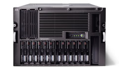

Андрей Борзенко
Современные компании сталкиваются со значительными трудностями при администрировании сложных ИТ-сред. Компания Hewlett-Packard (http://www.hp.com) уделяет много внимания упрощению администрирования вычислительных центров на основе концепции адаптивной инфраструктуры (Adaptive Infrastructure). Эта концепция, в частности, реализована во множестве интегрированных технологий в серверах семейства ProLiant, унаследованного от Compaq. Предполагается, что применение этих технологий поможет компаниям любых размеров развиваться, адаптируясь к условиям постоянно меняющихся требований рынка.
Объединение HP и Compaq, двух мировых лидеров в области серверного оборудования, породило немало проблем, как с точки зрения административно-управленческой, так и с точки зрения формирования новых моделей продукции. По мнению руководства объединенной компании, главную бизнес-задачу после объединения - увеличение своей доли серверного рынка по сравнению с прежней суммарной долей HP и Compaq - можно решить единственным способом, а именно, сохранив всех имеющихся клиентов обеих корпораций и приобретя новых. Это означает, что при разработке новых моделей продукции объединенной компании во главу угла ставится задача эффективной работы на массовом рынке корпоративных пользователей серверных систем.
Забота о защите инвестиций, сделанных многочисленными предприятиями по всему миру в свои информационные системы, а также необходимость сформировать наиболее перспективную и эффективную стратегию развития этих систем привели руководство Hewlett-Packard к такому решению: выбрать в качестве основы серверной продукции компании на базе архитектуры IA-32 устройства ProLiant, сохранив при этом классификацию серверов стандартной архитектуры, принятую в Compaq.
ProLiant в миреШесть из восьми крупнейших в мире поставщиков Интернет-услуг выбрали серверы ProLiant в качестве стандартной платформы для Web-хостинга, электронной коммерции и виртуальных частных сетей (VPN). Эти серверы ежедневно обрабатывают более миллиарда транзакций, что в четыре раза больше, чем число звонков, обслуживаемых AT&T, и в 12 раз больше, чем число транзакций, совершаемых в системе VISA в день с пиковой нагрузкой. Доля серверного рынка, занимаемая системами ProLiant, превышает 32% - в два с лишним раза больше, чем у ближайшего конкурента.
|
Особенности системы
ProLiant ML570 G2 - четырехпроцессорный сервер с высокой производительностью и широкими возможностями наращивания конфигурации. Повышению надежности способствует гибкость архитектуры, применение технологии дублирования ОЗУ с поддержкой горячей замены неисправных модулей (Hot-Plug Mirrored Memory), богатые возможности наращивания конфигурации внутри корпуса. В частности, система допускает увеличение объема ОЗУ до 32 Гбайт, поддерживает установку (без прерывания нормальной работы) до 14 жестких дисков высотой в один дюйм. Довольно существенно и то, что используемые в сервере процессоры Xeon MP поддерживают масштабирование по объему ОЗУ до 64 Гбайт. В системе имеется семь свободных гнезд шины расширения PCI-X с поддержкой тактовых частот до 100 МГц. Таким образом, ProLiant ML570 G2 по праву может считаться масштабируемым и надежным севером для вычислительного центра или удаленного объекта корпоративной вычислительной среды.
ProLiant ML570 G2 хорошо подходит для применения в вычислительных системах крупных корпораций, где необходимы высокий уровень масштабируемости и запас по производительности, позволяющий обслуживать тысячи пользователей одновременно. Этот четырехпроцессорный сервер обладает лучшим в своем классе показателем отношения цены и производительности. Индекс G2 в названии системы расшифровывается как Generation 2 - поколение 2 (сравнение моделей серверов двух поколений проводится в таблице). В конце 2001 г. Hewlett-Packard пересмотрела схему нумерации систем ProLiant, введя в нее понятие поколения, отражающее положение системы в иерархии технологической эволюции. В дальнейшем названия всех новых серверов будут содержать обозначение поколения, что позволит отличать новые системы от более старых. На названиях ранее выпущенных серверов это изменение не скажется.
| Параметр | ProLiant ML570 G2 | ProLiant ML570 |
| Процессор | Intel Xeon MP 2000 МГц (Gallatin) | Intel Pentium III Xeon 900 МГц |
| Кэш-память L2/L3 | 512 Кбайт/2 Мбайт | 2 Мбайт/нет |
| Поддержка многопроцессорных конфигураций | До 4 процессоров | До 4 процессоров |
| Объем ОЗУ в стандартной/макс. конфигурации | 512 Мбайт или 1 Гбайт/32 Гбайт | 128 Мбайт/16 Гбайт |
| Частота внешней шины процессора, МГц/тип ОЗУ | 400/PC1600 DDR SDRAM | 100/PC100 SDRAM |
| Контроллер жестких дисков | Внутренний двухканальный контроллер интерфейса Ultra 3 SCSI (готов к поддержке версии Ultra 4) | Внутренний двухканальный контроллер интерфейса Ultra 2 SCSI (готов к поддержке версии Ultra 3) |
| Сетевой контроллер | Встроенный 10/100 Мбит/с | Intel 10/100 Мбит/с, на дополнительной плате, занимающей одно гнездо расширения |
| Число отсеков для жестких дисков | 14 высотой 1 дюйм с горячей установкой и заменой (при использовании дополнительной корзины на 2 диска высотой 1 дюйм) | 10 высотой 1 дюйм с горячей установкой и заменой |
| Гнезда шины расширения | 7 гнезд PCI-X (64-разрядные/100 МГц), все свободны, 4 поддерживают горячую установку/замену | 6 гнезд PCI - из них 5 свободны (два 64-разрядных/66 МГц с горячей установкой/заменой, два 64-разрядных/33 МГц с горячей установкой/заменой, одно 64-разрядное/33 МГц, одно 32-разрядное/33 МГц) |
| Средства администрирования ПО и сервера | Latest SmartStart & Insight Manager | SmartStart & Insight Manager 5.2 |
| Источники питания | 600 Вт с коррекцией коэффициента мощности (2+1 резервный) | 400 Вт с коррекцией коэффициента мощности (2+1 резервный) |
| Средства администрирования | Возможна установка системы дистанционного администрирования и управления Optional Remote Insight Board Lights Out Edition | Возможна установка системы дистанционного администрирования и управления Remote Insight Board Lights Out Edition |
| Модели | модели - 2 в корпусе "башня и 2 для установки в стойку | моделей - 3 в корпусе "башня и 3 для установки в стойку |
| Высота стоечного шасси | 7U (311,15 мм) | 7U (311,15 мм) |
Области применения
Серверы ProLiant ML570 G2 ориентированы в основном на два класса потребителей. Первый - это крупные предприятия, нуждающиеся в высокопроизводительном масштабируемом сервере универсального назначения для исполнения ответственных приложений. Второй - вертикальные рынки (включая сферу финансовых и банковских услуг), а также компании, занятые дистрибуцией, производством, обслуживанием и страхованием.
В числе типовых приложений для этого сервера можно назвать службы файлового доступа и печати, крупные базы данных, обеспечивающие функционирование корпоративного прикладного ПО, системы электронной почты и передачи сообщений, хранилища данных и такие ответственные приложения, как мониторы транзакций, системы электронного финансового обслуживания, электронной торговли и т. п.
Кроме того, предполагается, что новый ProLiant ML570 G2 станет удачным приобретением для компании, нуждающейся в сервере, способном полностью самостоятельно обеспечить все потребности удаленного центра корпоративной вычислительной среды.
Технологии NetBurst и Hyper-Threading
Сервер ProLiant ML570 G2 поддерживает микроархитектуру NetBurst, реализованную корпорацией Intel в процессорах Xeon MP. В этой новой архитектуре подсистема кэш-памяти интегрирована с процессором более тесно, чем в прежних разработках, что обеспечило значительное повышение пропускной способности - пиковое значение ширины полосы пропускания достигло 51,2 Гбайт/с против 28,8 Гбайт/с для процессоров Pentium III Xeon.
Кроме того, вместе с новым поколением процессоров MP Xeon Intel представила технологию Hyper-Threading (ранее известную под названием Jackson). Hyper-Threading существенно ускоряет исполнение многопоточных многозадачных приложений благодаря повышенному коэффициенту утилизации ресурсов процессора. Эта технология позволяет одному физическому процессору исполнять два отдельных потока кода одновременно. С точки зрения ОС такой процессор представляет собой два отдельных логических устройства. Первоначальный выигрыш в производительности при использовании технологии в процессорах с архитектурой IA-32 нового поколения может достигать 30%. Производители большинства современных 32-разрядных операционных систем уже дополнили или планируют дополнить их поддержкой технологии Hyper-Threading.
Стоит отметить, что, как правило, тактовая частота процессора - не главный фактор, определяющий производительность системы, хотя это и не вполне совпадает с укоренившимися представлениями. Производительность системы в целом зависит еще и от архитектуры микропроцессорного комплекта (чипсета), объема кэш-памяти, пропускной способности различных шин и т. п. Сегодня двухпроцессорные серверы опередили системы с симметричной многопроцессорной обработкой (SMP) по показателю тактовой частоты процессора, но при этом сохранилось важное различие в объеме кэш-памяти. Например, системы ProLiant ML530 G2 оснащаются кристаллами Intel Xeon DP 2,20 ГГц, имеющими всего 512 Кбайт кэш-памяти второго уровня. В то же время на четырехпроцессорные ProLiant ML570 G2 будут устанавливаться последние новинки линейки Intel Xeon MP (Gallatin) с увеличенным кэшем.
Gallatin выходит на сценуПроцессоры, известные ранее под кодовым названием Gallatin, представляют собой усовершенствованные версии кристаллов семейства Intel Xeon для многопроцессорных серверов. Самый быстродействующий из новых чипов работает с тактовой частотой 2 ГГц и оснащен кэш-памятью третьего уровня емкостью 2 Мбайт. Прежние версии Xeon, которые вышли в марте, поддерживали максимальную тактовую частоту 1,6 ГГц и кэш-память емкостью 1 Мбайт. По сравнению с предыдущим поколением семейства процессоров Intel Xeon MP новинки демонстрируют 38%-ный прирост производительности на типовых серверных задачах (обслуживание баз данных или систем управления взаимодействием с клиентами и цепочками поставок), а также обладают лучшими возможностями масштабирования. Сразу после анонса Gallatin Нewlett-Рackard стала применять новые кристаллы в серверах ProLiant ML570 и ProLiant DL760. Согласно данным корпорации, в полной конфигурации подобные машины на тестах TPC-C показывали результат 109 167 транзакций в секунду. Intel Xeon MP созданы на базе микроархитектуры NetBurst и поддерживают технологию Hyper-Threading. Новые процессоры работают с тактовой частотой 1,5, 1,9 или 2 ГГц. Модели 1,5 и 1,9 ГГц содержат кэш емкостью 1 Мбайт, тогда как у версии 2 ГГц емкость кэша составляет 2 Мбайт. Чипы изготавливаются по технологическому процессу с нормой 130 нм (прежние модели Xeon изготавливались по технологическому процессу 180 нм). Ожидается, что в 2003 г. новая микросхема будет введена в конструкцию модульных (blade) серверов. |
Кэш-память iL3
Размещение кэш-памяти третьего уровня на одном кристалле с процессором обеспечивает увеличение пропускной способности и производительности в расчете на килобайт. Надо сказать, что интегрированная кэш-память третьего уровня (iL3) присутствует только в кристаллах Intel Xeon MP нового поколения. Этот элемент архитектуры обеспечивает расширение полосы пропускания и увеличение производительности в расчете на каждый килобайт кэш-памяти. Совокупный объем кэш-памяти (L2 + iL3) в этих процессорах может превышать 2 Мбайт, что в сочетании с повышенной частотой и эффективностью работы внешней шины увеличивает эффективность использования ресурсов процессора. Время поиска данных сокращается, что приводит к повышению скорости доступа к ним - важнейший фактор при работе с прикладными базами данных, интенсивно использующими вычислительные ресурсы.
| Напольное исполнение сервера ProLiant ML570G2.
|
Технология PCI-X
Избежать возникновения узких мест в подсистеме ввода-вывода в новом ProLiant ML570 G2 помогает технология PCI-X, предусматривающая горячую замену дополнительных плат. PCI-X - продукт эволюционного развития технологии PCI. На рабочей частоте 133 МГц при передаче 64 разрядов данных за один цикл PCI-X обеспечивает пиковые уровни пропускной способности, достаточные для удовлетворения потребностей таких широкополосных устройств, как сетевые адаптеры Gigabit Ethernet, хост-адаптеры протокола Fibre Channel, контроллеры Ultra3 SCSI и SAN. Кроме того, технология обеспечивает защиту инвестиций благодаря обратной совместимости с существующими устройствами для шины PCI.
Сервер ProLiant ML570 G2 имеет семь гнезд шины расширения PCI-X, в том числе четыре с возможностью замены плат в процессе работы, - это позволяет дополнительно повысить уровень готовности и увеличить продолжительность работы без простоев. Кроме того, в ML570 предусмотрены индикаторы состояния, позволяющие определить, когда через то или иное гнездо шины расширения идет передача данных.
Новые технологии защиты памяти
Недавно Hewlett-Packard представила новую технологию защиты данных в ОЗУ, Advanced Memory Protection (AMP). Технология позволяет обнаружить и устранить неисправность заблаговременно, прежде чем она скажется на уровне готовности. В дополнение к усовершенствованному механизму обнаружения и исправления ошибок Advanced ECC и резервному банку памяти Online Spare, которые применяются в существующих серверах ProLiant ML370 G2 и ProLiant DL380 G2, в ProLiant ML570 G2 используется дублирование ОЗУ с возможностью замены неисправных модулей памяти в процессе работы (Hot-Plug Mirrored Memory). Теперь в случае выходя из строя задействованного в схеме дублирования DIMM-модуля (или модулей) пользователь может провести замену, не выключая сервер и не дожидаясь его остановки для проведения плановых работ. Разработчики полагают, что ML570G2 стал первым в своем классе четырехпроцессорным сервером, обеспечивающим такой уровень резервирования ОЗУ. Кроме того, система предусматривает возможность горячего увеличения объема ОЗУ для динамического наращивания ресурса оперативной памяти сервера.
В серверах ProLiant ML570 G2 используются следующие необязательные элементы схемы Compaq Advanced Memory Protection.
Резервный банк ОЗУ (Online Spare Memory). Это решение обеспечивает дополнительный к технологии Advanced ECC уровень защиты данных. Если число одноразрядных ошибок в некотором банке ОЗУ превышает заданный порог, данные из этого банка переносятся в резервный. Эта операция выполняется без вмешательства человека и без приостановки работы сервера. Предусмотрена возможность конфигурирования резервного банка ОЗУ на одной плате памяти с основным или на отдельной. Неисправный DIMM-модуль можно заменить в любое время, в соответствии с планом профилактических работ.
Дублирование ОЗУ на той же плате памяти (Single-board Mirrored Memory). Это обеспечивает более высокий уровень защиты данных по сравнению с технологиями Advanced ECC и резервного банка памяти, поскольку защищает от всевозможных многоразрядных ошибок в ОЗУ. Дублирование ОЗУ на той же плате памяти подразумевает конфигурирование в пределах одной платы памяти основной и резервной подсистем ОЗУ таким образом, что запись данных осуществляется в обе одновременно, а чтение - только из одной. При обнаружении многоразрядной ошибки сервер просто переключается на резервное ОЗУ, содержащее зеркальную копию всех данных. Эта операция выполняется без вмешательства человека и без приостановки работы сервера. Неисправный DIMM-модуль можно затем заменить в любое время, в соответствии с планом профилактических работ.
Дублирование ОЗУ с возможностью замены неисправных модулей памяти в процессе работы (Hot-Plug Mirrored Memory). Технология дублирования ОЗУ с возможностью замены неисправных модулей памяти в процессе работы обеспечивает более высокий уровень защиты данных по сравнению и с Advanced ECC, и с резервными банками памяти, и с дублированием ОЗУ на той же плате. Она защищает от многоразрядных ошибок в ОЗУ и обладает дополнительным преимуществом - возможностью замены неисправных DIMM-модулей в процессе работы сервера. При этом необходимы две платы памяти, содержащие зеркальные копии одних и тех же данных. Обе платы работают параллельно для защиты от многоразрядных ошибок в ОЗУ. В такой конфигурации система осуществляет запись данных на обе платы одновременно, а чтение - только с одной из них. В случае обнаружения многоразрядной ошибки система переключается на резервную плату. После этого плату, содержащую неисправный DIMM-модуль (или модули), можно заменить в любой момент, не останавливая работу сервера. После замены неисправных модулей и установки платы памяти обратно в сервер система немедленно возвращается в режим работы с дублированием ОЗУ с возможностью замены неисправных модулей памяти в процессе работы. Все описанные операции осуществляются без приостановки работы сервера.
Стоит отметить, что дублирование ОЗУ с возможностью замены неисправных модулей памяти в процессе работы и конфигурирование резервного банка ОЗУ на отдельной плате памяти требует установки двух отдельных плат памяти. В стандартной комплектации все модели серверов ProLiant ML570 G2 оснащаются одной платой памяти - вторая устанавливается дополнительно.
Начиная с сервера ML570 G2 подсистемы ОЗУ будут строиться на основе модулей типа DDR (PC1600) с чередованием по два. Последнее означает, что модули необходимо устанавливать парами. Такая организация позволяет удвоить объем данных, считываемых или записываемых за одну операцию. Уменьшение необходимого числа обращений к ОЗУ приводит еще и к сокращению числа тактов ожидания процессора, дополнительно повышая производительность.
"Горячие" дела
Еще раз поясним, чем горячая установка дополнительных модулей памяти отличается от их горячей замены. Первый вариант позволяет динамически наращивать объем ОЗУ, не выключая питания сервера, тогда как под горячей заменой понимают извлечение неисправного DIMM-модуля и замену его новым в конфигурации подсистемы ОЗУ с двумя платами памяти. В настоящее время ProLiant ML570 G2 поддерживает как горячую замену модулей памяти в дублированных конфигурациях, так и горячую установку дополнительных модулей. Существенное различие между этими двумя возможностями состоит в том, что, в отличие от горячей замены, горячая установка дополнительных модулей требует поддержки со стороны операционной системы. Первой операционной системой, поддерживающей эту функцию, станет Microsoft .NET. Специалисты Hewlett-Packard отмечают, что ProLiant ML570 G2 - первый в своем классе четырехпроцессорный сервер с архитектурой Intel, поддерживающий технологию, которая реализована в этой новой ОС.
Источники питания
Хотя новые серверы ProLiant ML570 G2 рассчитаны на поддержку резервирования блоков питания по схеме 2+1 (т. е. два в стандартной конфигурации плюс еще один для целей резервирования), определенные конфигурации способны работать и в режиме резервирования по схеме 1+1, для чего достаточно двух блоков питания. По имеющейся информации, Hewlett-Packard не проводила соответствующих тестов и не документировала этой возможности, но среди таких конфигураций можно назвать варианты ProLiant ML570 G2 с числом процессоров до 4 и с 6 жесткими дисками, а также с числом процессоров до 2 и с 12 жесткими дисками.
Варианты исполнения
Как показали опросы клиентов корпорации, от серверов, устанавливаемых в аппаратурные стойки, очень часто требуют более высоких уровней резервирования и производительности. Кроме того, поскольку такие системы часто развертываются сразу в больших количествах, клиенты предпочитают приобретать их предварительно сконфигурированными со всеми необходимыми дополнительными компонентами. Именно по этой причине модели ProLiant ML570 G2, рассчитанные на установку в аппаратурные стойки, комплектуются двумя процессорами и резервированными (для сокращения времени простоев) вентиляторами охлаждения и блоками питания.
|  | Вариант ProLiant ML570G2 для установки в стойку.
|
Все серверы, оптимизированные для установки в стойки, стандартно комплектуются базовым набором монтажных элементов для установки в стойки с монтажными отверстиями квадратного сечения, что отвечает потребностям большинства покупателей. Тем, кому требуется устанавливать сервер в стойку с монтажными отверстиями круглого сечения или в стойку для телекоммуникационной аппаратуры, следует приобрести соответствующий дополнительный набор монтажных элементов (используемый наряду с универсальными компонентами базового набора).
Для установки сервера в стойку для телекоммуникационной аппаратуры потребуется дополнительный набор монтажных элементов и кронштейнов, а также некоторые элементы базового набора монтажных элементов для установки в аппаратурные стойки, который поставляется вместе с сервером (в него входят все необходимые кронштейны, крепеж и инструкции по установке).
Усовершенствования ПО
В ProLiant ML570 G2 введено два усовершенствования ПО, направленных на повышение удобства его использования. Новая утилита конфигурирования в ПЗУ RBSU (ROM-Based Setup Utility) обеспечивает интуитивно ясный интерфейс для быстрой и простой настройки конфигурации системы. Утилита вызывается в процессе начальной загрузки с помощью клавиши F9. Предусмотрена автоматическая передача управления ПЗУ дополнительных компонентов производства других компаний. Применение RBSU упрощает тиражирование сценариев, используемых для массового развертывания серверов, - например, в филиалах компаний или в розничных магазинах. Данное программное усовершенствование реализуется во всех новых моделях серверов. Утилита конфигурирования BIOS set-up, вызываемая в процессе начальной загрузки с помощью клавиши F10, будет сохранена во всех существующих моделях сервера ML570.
Второе усовершенствование - новая среда исполнения программ до загрузки ОС PXE (Pre-boot eXecutable Environment). Это дополнительный программный код, хранимый в ПЗУ сервера и предназначенный для загрузки ОС по сети (через сетевой адаптер), а также для администрирования сервера без помощи сервисов ОС (в частности, если операционная система не установлена). Это усовершенствование получает все более широкое распространение, в первую очередь в системах с архитектурой Intel.
Бизнес-приложения и ОС
Серверы ProLiant ML570 G2 подходят для исполнения практически любых бизнес-приложений. В число наиболее популярных комплектов ПО, сертифицированных для исполнения на этом сервере, входят Microsoft Exchange, Microsoft SВL, SAP, Oracle9i RAC, СУБД Oracle, Lotus Notes/Domino и Citrix. Полную информацию о поддержке различных решений серверами ProLiant можно найти по адресу http://www.hp.com/solutions/index.html.
На момент анонса сервера гарантировалась его совместимость с такими ОС, как Whistler (.NET) Server and Advanced Server, Microsoft Windows 2000 Server, Microsoft Windows 2000 Advanced Server, Microsoft NT Server 4.0, Microsoft NT Server 4.0 Enterprise Edition, Novell Netware 5.x/6, IBM OS/2 Warp Server for eBusiness, Sun Solaris Intel Platform Edition 8.0, Caldera OpenUnix 8.1, Openserver 5.07 (SMP), Linux (2.4 kernel - Red Hat и SuSE).
Заключение
Часто говорят, что сервер - это основа ИТ-среды организации. Его архитектурные и другие особенности определяются как результат умножения достижений технической мысли на требования, предъявляемые современными предприятиями к качеству функционирования их информационных сред. Поэтому, говоря о серверной продукции Hewlett-Packard как о законченном техническом решении, необходимо помнить и о платформе хранения данных StorageWorks, а также о дополнительном оборудовании, которое может поставляться вместе с серверами ProLiant. В целом это оборудование образует стройную систему модульных компонентов, из которых каждый заказчик может "собрать" уникальную ИТ-среду своего предприятия. Разработанные на базе общепринятых стандартов, эти "строительные блоки" позволяют создавать адаптивные информационные инфраструктуры, допускающие масштабирование и настройку на различные особенности конкретных предприятий и используемых приложений.